2D变换（2D transformation）
缩放（Scale）
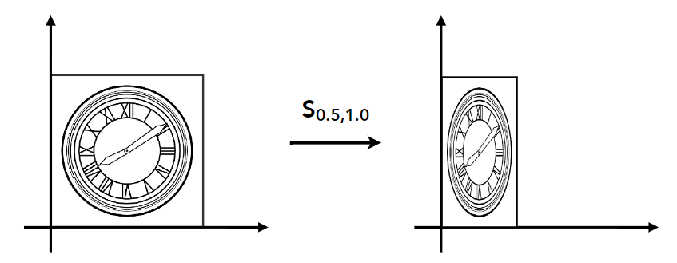
坐标(x,y)缩放至(x’,y’)，x轴缩放 ，y轴缩放：
矩阵形式：
错切（shear）
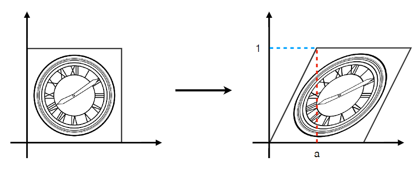
首先能观察到点的y坐标不会发生变化，只有x坐标进行变换：
x轴的坐标变换会根据高度（即y值）进行变换。具体而言：
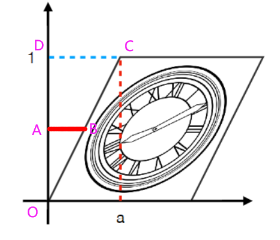
对于点A(x,y)变换到点B(x’,y’)有：
综上有：
得：
综上有：
矩阵形式：
旋转（Rotation）
规定绕原点（0,0）逆时针进行旋转。
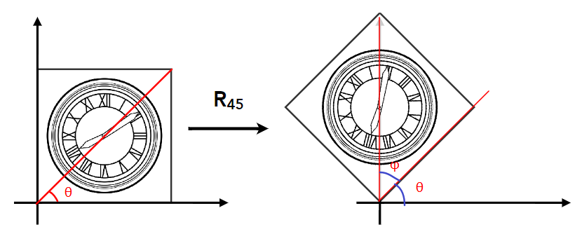
对于图上一点$(x_a,y_a)$ 有
经旋转$\phi$角度至$(x_a’,y_a’)$有
根据和角公式：
有：
将公式(1)(2)带入有
写成矩阵形式有：
旋转矩阵是正交矩阵
考虑一个点旋转 $-\phi$ 角度。
有：
与旋转$\phi$ 角度互逆：
并且可以观察到这两个矩阵互为转置矩阵
因此有：
综上，旋转矩阵为正交矩阵。
位移（Translation）
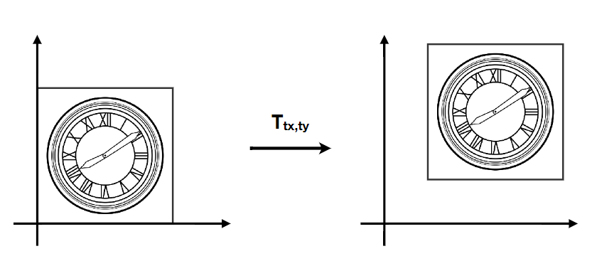
将点(x,y)平移$T_{tx}、T_{ty}$个单位得到$(x+T_{tx},y+T_{ty})$
有变换：
矩阵形式：
但该变换不是线性变换，而是仿射变换。
仿射变换，又称仿射映射，是指在几何进行一次线性变换并接上一个平移，变换为另一个向量空间。
“仿射变换”就是：“线性变换”+“平移”
我们现在要通过高纬度的线性变换完成低纬度的仿射变换。将点进行生维到z=1的平面上、也就是(x,y)至(x,y,1)：
记$\overrightarrow{x}$为二维平面上的点坐标
A为在二维空间上的线性变换矩阵。
$\overrightarrow{b}$ 为位移尺度:
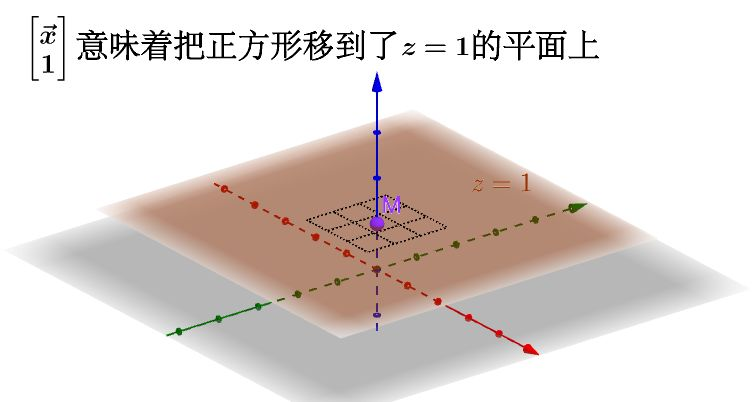
这样我就可以在三维空间下通过$\left[\begin{matrix}A&\overrightarrow{b}\\0&1\end{matrix}\right]$这个线性变换变换柱子来操作z=1平面上的二维正方形，完成仿射变换：
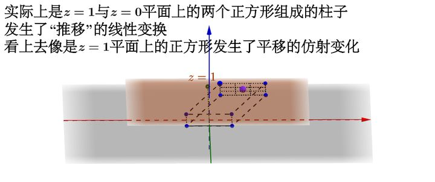
记$\overrightarrow{y}$为二维平面上的位移后得到的点坐标(x’,y’)
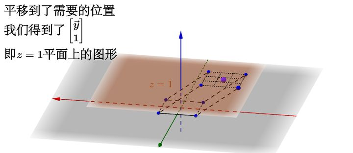
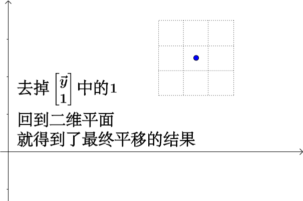
新加入的维度记为w，也称为齐次坐标。
矩阵形式：
把矩阵分解为向量更好理解：
齐次坐标（Homogenous Coordinates）
齐次坐标：就是将一个原本是n维的向量用一个n+1维向量来表示，是指一个用于投影几何里的坐标系统，如同用于欧氏几何里的笛卡儿坐标一般。”
齐次坐标可以看作一种记号，w为1记为点，为0记为向量。
在欧氏空间中，两条平行线永不相交，但是在投影几何中，两条平行线是可以相交的。我们用齐次坐标描述投影几何。

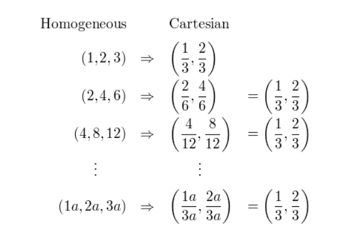
可以看到，虽然齐次坐标的表现形式不同，但都对应同一个欧氏空间中的点$(\frac{1}{3},\frac{2}{3})$。

两条平行线可以相交
考虑：
由于C不等于D，所以上述两条直线平行，没有解。
在齐次坐标中：
我们可以得到一个解（x,y,0）,这表示两条直线会在无穷远处相交。
齐次坐标下的点与向量
齐次坐标系下的(x,y,w)就是2D坐标下的(x/w,y/w,1)
点表示：$(x,y,1)^T$
向量表示：$(x,y,0)^T$
向量的齐次坐标w为0是为了保护向量不会进行位移变换，向量的位移没有意义。
在齐次坐标下（着重注意w的值为0还是1）：
- 向量+向量=向量；
- 点-点=向量（点的两个w相减为0了）；
- 点+向量=点（相当于点按照向量进行了移动）；
- 点+点=中点；
比如有点A(1,2,1)、点B(1,6,1)
两个点相加有(2,8,2)，之后我们要把w化为1，所以所有坐标分量同时除2（w值），就得到
（1,4,1）就是点A与点B的中点。
组合变换（Composing Transforms）
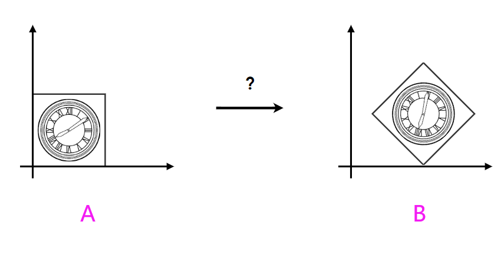
从A变换至B的方案
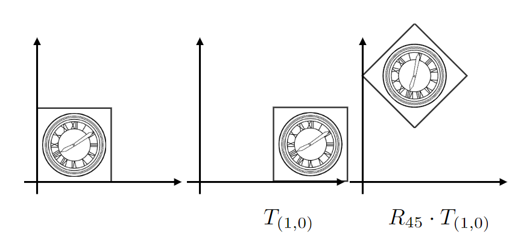
显然不对，位移变换对旋转变换产生了影响。
先位移再缩放，位移的向量也会同样被缩放。
综上，变换顺序(右乘优先)：
比方说，通过变换希望获得的结果可能是：
将一个放在原点的物体（比方说可乐罐）移动到（30，50），让它自身倾斜 45 度，再放大 2 倍。
而不希望的结果是：
和本地坐标轴成角度的缩放（会导致扭曲，像踩扁的可乐罐）。
下图为旋转30度，x轴放大2倍，y轴缩小至0.5倍。
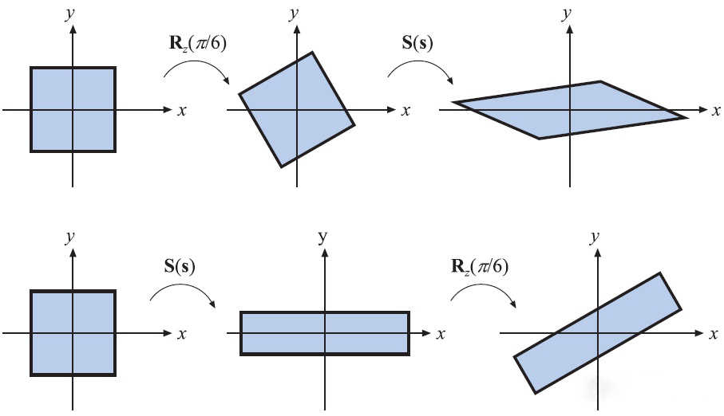
绕自己几何中心以外位置的原点的旋转 （地球公转式） 和缩放。
而颠倒了上述变换顺序就会得到这样不自然的结果。
具体的说：
当缩放在旋转之后进行时，会发生现象1。
当缩放和旋转在平移之后进行时会发生现象2。
这时因为：
在物体刚刚放入世界坐标系的时候使用的是本地坐标，也就是本地和全局坐标系的原点和坐标轴都是重合的（当然两者分别使用了左右手坐标系时除外 - 那是BUG），此时所有物体都“把世界坐标系当做自己的本地坐标系”。
而经过了坐标变换之后：
- 缩放变换不改变坐标轴的走向，也不改变原点的位置，所以两个坐标系仍然重合。
- 旋转变换改变坐标轴的走向，但不改变原点的位置，所以两个坐标系坐标轴不再处于相同走向。
- 平移变换不改变坐标轴走向，但改变原点位置，两个坐标系原点不再重合。
这样就可以解释问什么缩放不能在旋转之后，而缩放和旋转都不能在平移之后了。 于是没有问题的顺序只能是 缩放 -> 旋转 -> 平移 。
3D变换（3D Transformations）
缩放 位移 旋转
缩放 Scale:
位移 Translation:
旋转 Rotation:
沿x轴：
沿y轴：
注意到沿y轴的旋转是其x,z轴的反方向的旋转（在2D旋转中，推导了旋转矩阵是正交矩阵）
沿z轴：
视图变换（Viewing transformation）
上述所讲述的缩放、位移、旋转是Model变换，目的是将物体从局部空间（Local Space）变换至世界空间（World Space）中去。
摄像机变换（Camera Transformation）
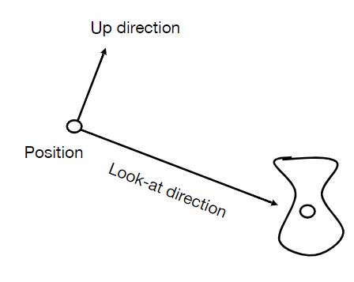
确定一个摄像机我们需要定义好：
- 位置（position）: $\overrightarrow{e}$
- 注视方向（Look-at/gaze direction）: $\overrightarrow{g}$
- 上向量（Up direction）：$\overrightarrow{t}$
摄像机变换的目的是得到所有可视物体与摄像机的相对位置，我们需要做的是将摄像机的位置$\overrightarrow{e}$变换至原点，注视方向 $\overrightarrow{g}$ 变换至-z方向，上向量$\overrightarrow{t}$变换至y方向。所有物体要与摄像机做相同的变换。
第一步：将摄像机的位置移动到原点，只需要将现在摄像机的位置$(x_e,y_e,z_e)$做$T_x(-x_e)、T_y(-y_e)、T_z(-z_e)、$的位移变换即可:
第二步：将注视方向 $\overrightarrow{g}$ 旋转至-z方向，上向量$\overrightarrow{t}$旋转至y方向, $\overrightarrow{g}\cross\overrightarrow{t}$ 旋转至x方向。
这个变换并不好做，但是我们注意到将x,y,z基向量旋转至$\overrightarrow{g}\cross\overrightarrow{t}、\overrightarrow{t}、-\overrightarrow{g}、$ 是好做的。我们将基向量变换至摄像机向量的矩阵取逆，就是我们所求的矩阵。
x,y,z的向量矩阵：
很容易的可以得到旋转矩阵：
将旋转矩阵$R^{-1}_{camera}$乘x,y,z的向量矩阵$M_{xyz}$是可以得到摄像机向量矩阵的！
因此将$R^{-1}_{camera}$ 取逆即可，我们又知道旋转矩阵是正交矩阵，其逆等于其转置，因此就有：
将上述两步结合，我们就得到了摄像机变换：
投影变换（Projection transformation）
我们要获取摄像机所看到的内容，这就需要投影变换。将摄像机所看到的内容投影变换到$[-1,1]^3$ 正方体空间中，方便最后显示到屏幕上。
投影变换有两种，不带透视的正交投影，与带透视的透视投影。
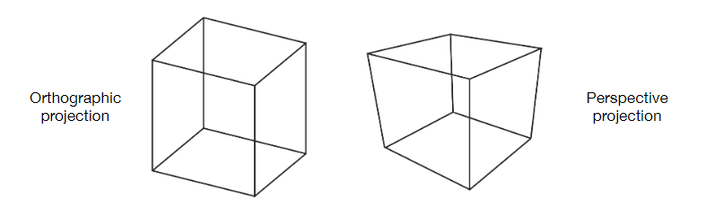
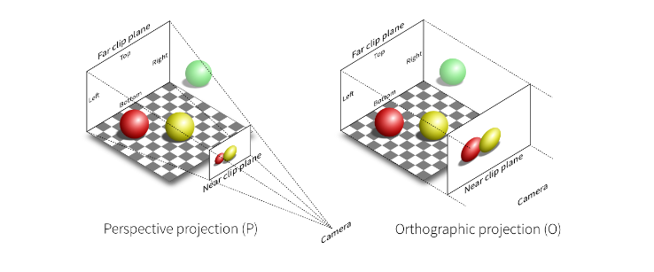
正交投影（Orthographic Projection）
假设一个摄像机所看到的内容被一个长方体所包含，做投影变换的目的是将这个长方体变换至标准正方体（“canonical” cube）（正方体为$[-1,1]^3$）。
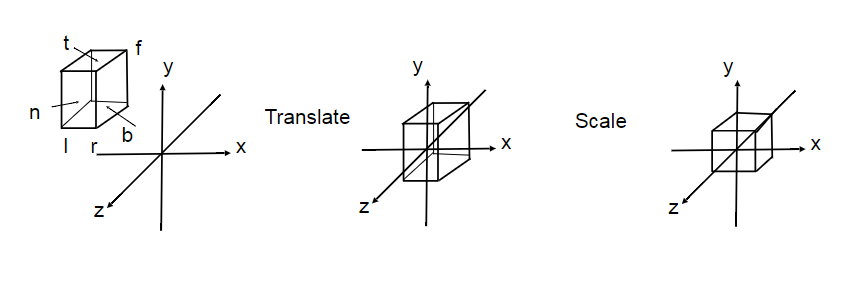
定义这个长方体的
- 左平面l，右平面r，[l,r]
- 下平面b，上平面t，[b,t]
- 远平面f，近平面n，[f,n]
接下来将[l,r]、[f,n]、[b,t] 三个区间变换至[-1,1]上
第一步：将长方体的中心$(\frac{l+r}{2},\frac{b+t}{2},\frac{f+n}{2})$平移到坐标原点处。
第二步：将长方体缩放为$[-1,1]^3$的标准正方体，会对长方体内的物体产生非等比缩放从而产生物体的变形，不过不用担心，我们会在视口变换中处理这个问题。
左右平面的距离为：$r-l$ 。想要变换至$[-1,1]$上，所需的操作为$(r-l)*\frac{2}{r-l}$。上下，前后面同理，因此缩放矩阵为：
综上，这个正交投影变换矩阵为：
透视投影（Perspective Projection）
我们将平截头体远平面向里挤压，使其变成长方体，然后再对长方体使用正交投影变换。
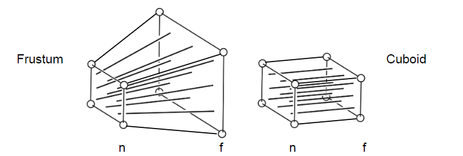
我们规定“挤压”的规则：
- 近平面上的点坐标不会发生改变
- 远平面上的点z坐标不会发生改变。
- 远平面的中心坐标不会发生改变。
平截头体的侧视图（只展示了上半部分）如下：
近平面上的点为(x’,y’,z’)，远平面上的点为(x,y,z),最左边的点为摄像机的点，也是坐标原点。
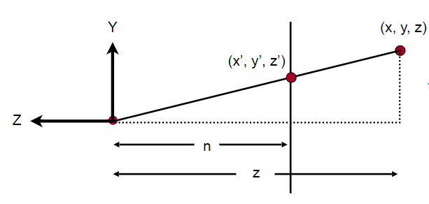
根据相似三角形，很容易得到：
y’的对应规则并不特指在远平面上的点，在平截头体里的y坐标都符合这个规则。
同理，可以从上视图里推出x’与x的关系。性质与y’与y的关系一样。
因此对任意一点(x,y,z,1)，我们“挤压”后有如下变换（只关注上下如何变换，先不关注前后的变换）：
最后一个等号的成立，是根据齐次坐标的性质。两者表示3维空间中同一个点。
我们可以推算出从透视投影到正交投影变换的一部分：
接下来，开始推导z坐标的变换。我们不清楚平截头体内的点z坐标的变换（根据最后的结论会发现内部点的z坐标会发生改变），但是我们规定了近平面(x,y,n,1)与远平面(x,y,f,1)的z坐标不会发生改变。
对于近平面上的点(x,y,n,1),经过$M_{persp\rightarrow ortho}$变换后点坐标不会发生改变，仍然是(x,y,n,1)，有：
==号的成立是因为齐次坐标的性质，两边仍然表示同一个点。同时乘以n是为了与（3）式表现形式一样，(3)式的x,y坐标与(4)式的x,y坐标的值都为nx,ny。w值都为点的z坐标。
我们现在可以推导$M_{persp\rightarrow ortho}$的第三行值满足：
可以得到：
别忘了，我们还有规定远平面上的点z坐标变换前后不发生改变，我们取远平面上的中心点(0,0,f,1)进行变换。
道理与近平面上的点变换一样。
可以得到：
联立：
解得：
综上$M_{persp\rightarrow ortho}$为：
之后，在将”挤压”后的平截头体做正交投影即可。
因此，透视投影变换为：
可以发现内部点的z坐标会发生改变，近远面上的点z坐标不会发生改变。
对平截头体进行描述
平截头体的前后面，near与far直接定义。
而左右与上下面通过宽高比(aspect)与竖直的可视角度(fovY)定义。
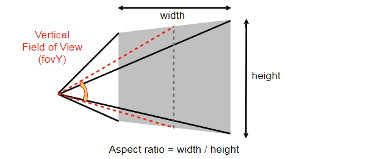
侧视图：
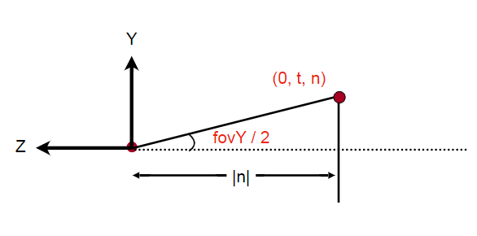
很显然：
这样就定义了上下面。
再根据宽高比定义左右面。有：
视口变换（Viewport Transform）
将投影变换得到标准正方体[-1,1]^3 变换到屏幕（screen）上。
屏幕（screen）
图形学中定义屏幕是一个二维数组，元素为像素。像素的表示为rgb。
屏幕空间：
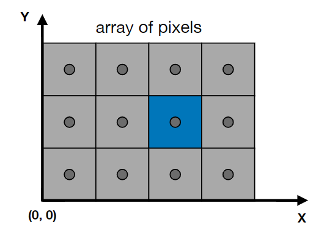
规定（可以有多种规定）：
- 屏幕的左下角为原点。
- 像素的坐标为（x,y）,为像素的左下角，比如蓝色的像素坐标为（2,1）。
- 像素坐标的范围为(0,0)到(width-1,height-1)。
- 像素的中心为（x+0.5,y+0.5）。
- 像素的覆盖范围(0,0)到(width,height)。
视口变化
接下来就要把投影变换得到标准正方体[-1,1]^3 变换到屏幕上去了。
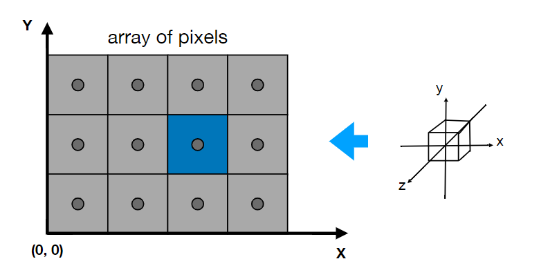
我们暂时忽略标准正方体的z坐标。
现在我们要把标准正方体（型）$[-1,1]^2$的坐标映射到屏幕上[0,width]*[0,hight]的空间中。
首先把标准正方型缩放到与屏幕一样大小：
再把正方形的左下角位移到屏幕原点(0,0)处:
综上，视口变换矩阵为：
总结
将一个在局部空间定义好的物体，最终显示到屏幕上。
需要经过：
- 模型矩阵变换至世界空间。
- 将物体连同定义好的摄像机经过观察（摄像机）矩阵变换到观察空间，也就是摄像机所看到的内容。
- 摄像机所看到的内容经过投影矩阵变换将其变换至标准正方体中。
- 将标准正方体经过视口矩阵变换到屏幕上。